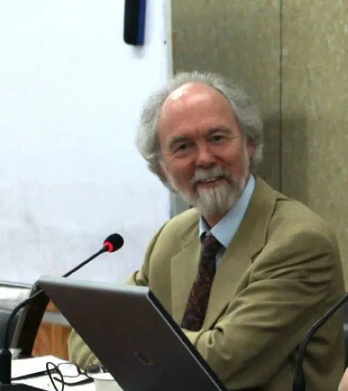

收录于合集
以下文章来源于知世书坊 ，作者知世书坊
 知世书坊 .
知世书坊 .
上海人民出版社国际政治编辑室官方公众号。我们为您提供学术经典，剖析时政热点，分享做书趣事。在这里，让我们一起读懂世界。

新书上市
作为全球化的社会科学，国际关系学的不平衡发展是如何产生的？
阿查亚和布赞关注西方国际关系学的发展，
引领学科发展新方向，
提出发展中国家在未来构建全球国际关系学的重要作用！
国关学科诞生 一百周年 献礼， 国际关系学科史研究 重磅著作全新上市！
全球国际关系学的构建：
百年国际关系学的起源和演进
[加]阿米塔·阿查亚、[英]巴里·布赞 著
刘德斌 等译
上海人民出版社2021年7月版
01
Global International Relations
内容简介
《全球国际关系学的构建》是著名国际关系学者阿米塔·阿查亚和国际关系“英国学派”代表人物巴里·布赞合著的一本学术著作。阿查亚作为国际关系领域重要的非西方学者，一直致力于非西方国际关系理论的研究，突出东方在国际关系中的重要作用。基于对国际关系自身起源与两个多世纪以来形塑国际关系历史的反思，两位作者在本书中呼吁关注非西方世界国际关系理论的发展，提出发展中国家在未来构建全球国际关系学中的重要作用。本书挑战传统主导性的西方国际关系理论视角，提出建立南北方相互融合的后西方世界秩序，为推动国际关系理论创新和全球国际关系学的构建提供洞见，具有较高的学术研究价值。
02
Global International Relations
作者简介
阿米塔•阿查亚 美利坚大学国际事务学院国际关系学杰出教授。他是第一位当选国际研究协会（ISA）主席（2014—2015年）的非西方学者，曾获国际研究协会颁发的两项杰出学者奖，主要研究领域包括外交关系、人类安全、国际关系、地区主义以及国家安全等，曾出版《建构安全共同体》《美国世界秩序的终结》等著作。

巴里·布赞 英国伦敦政治经济学院国际关系系荣誉教授、外交政策智库“国际事务、外交与战略研究中心”（LSE IDEAS）高级研究员、英国社会科学院院士，是国际关系“英国学派”的代表人物，他的代表作包括：《世界历史中的国际体系》（与理查德·利特尔合著）、《地区安全复合体与国际安全结构》（与奥利·维夫合著）、《从国际社会到世界社会》、《国际安全研究的演化》（与琳娜·汉森合著）、《英国学派理论导论》等。
03
Global International Relations
译者简介
刘德斌 1957年5月生，吉林长春人，法学（政治学）博士，吉林大学历史学与国际关系学双聘教授，博士生导师。吉林大学公共外交学院创始院长，吉林大学国际关系研究所所长，兼任中国国际关系学会副会长，中国世界近代现代史研究会副会长，国家社会科学基金学科评审专家。主要研究领域为国际关系史、国际关系理论（英国学派）和公共外交等。近年来发表的主要成果为:《英国学派译丛》（主编），包括《英国学派理论导论》、《国际社会的演进》、《世界历史中的国际体系：国际关系研究的再构建》（主译）、《文明与帝国：中国与日本遭遇欧洲国际社会》和《早期现代世界的国际秩序：西方崛起的前夜》；《国际关系史》（主编，修订版）和《全球化关键词》（主译）等。
04
Global International Relations
目录
目 录
译者序／Ⅰ
中文版序／Ⅷ
致谢／Ⅺ
缩略语／ⅩⅢ
导言／1
第一章1919年之前的世界：现代国际关系的构建／8
第二章1919年之前的国际关系研究：奠定基础／32
第三章1919—1945年的世界：依然是全球国际社会1.0版／68
第四章 国际关系学（1919—1945年）：学科的第一次创立／83
第五章1945年以后的世界：冷战与去殖民化的时代／116
第六章 国际关系学（1945—1989年）：学科的二次创立／141
第七章1989年以后的世界：“单极性”、全球化与他者的崛起／184
第八章1989年之后的国际关系学／222
第九章 后西方世界秩序：深度多元主义／267
第十章 迈向全球国际关系学／292
参考文献／329
译后记／370
05
Global International Relations
学人推荐
本书是对国际关系学的全面重述、对学科发展的批判性回顾，以及建立真正的全球国际关系学的开创性著作。在国际关系学科百年纪念之际，阿查亚和布赞献上了一本鼓舞人心的教科书。本书也是所有对更具包容性和前瞻性的世界政治和全球国际社会研究感兴趣的人的必读书目。
——秦亚青，外交学院原院长
阿查亚和布赞对国际关系学进行了不同寻常、兼顾各方的解读，强烈呼吁建立一门真正具有自我反思性的学科。当下国际社会正变得越来越全球化，无法简单地一概而论，对于所有有志于研究和解释现实世界的国际关系学者来说，这是一本重要而恰合时宜的读物。
——伊夫林·戈，
澳大利亚国立大学战略政策研究系教授
好好学习，天天“在看”